Objectives
- Introduce UML Class Diagram modeling using Visual Paradigm
- Define a simple model and implement it in Play
- Write comprehensive unit tests to exercise the model
Exercises
The witpress-v2 app, completed during the summer school, implements a simple blogging app with comments. You may have this app in your workspace. If not, this is the archive here:
Exercise 1:
Your task is to implement a comprehensive set of unit tests to fully exercise the model classes. The following screen capture is and example of the type of tests you should attempt to implement:
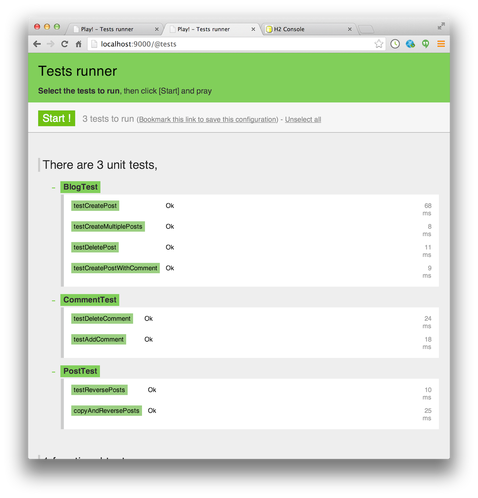
You should have sufficient guidance from this lab to complete these tests. Note that the test names indicate approximately the focus on each of the tests.
The PostTests are a little different in that they exercise features form the collection library - rather than the model classes themselves. I.e. they represent tests that are focused not so much on your classes, but on verifying your understanding of how some library classes work.
Exercise 1 Solution:
Exercise 3:
Currently a Blog is not modeled - a blog just a collection of posts. Model a Blog as a first class object, developing tests to verify the implementation as you go. Do this in two versions:
- Each user can have a single blog.
- Each user may have zero or more blogs
Dont worry about the UI, just focus on the tests
Exercise 3 Solution:
This is a complete solution to Exercise 3 :
Which encompasses:
- Each user may have zero or more blogs - mode change
- Tests which verify this model change
- UI, sufficient changes have been made to the UI to enable it to function using the revised model.
Play Update + create new project.
The play framework has been updated recently to 1.2.7. Download the new version here:
Recall, installing play requires you do two things:
- expand the play zip file somewhere on your PC
- place the expanded folder on your path.
Unless you do both steps, you will still be using the older version.
Now creating a brand new Play project. Do this by navigating to the correct folder folder (most likely your workspace) and running a command prompt. Then type:
play new jpamodel
Once this has completed, change into the folder just created (jpamodel) and run the eclipsify command:
cd jpamodel
play eclipsify
You can now import the project into eclipse in the usual way.
Once imported, you may need to make sure the project is configured for an in-memory database - by verifying that conf.ini contains the following:
db=mem
Visual Paradigm
For this step to work you will need to have installed Visual Paradigm. This is the particular product here:
... and it can be downloaded here
If you select the 'no install' version, then it can be reliably run from a memory stick if you need to operate that way. Otherwise install as normal.
You will require this Key in order to activate the application:
Key for Visual Paradigm 10.2: Standard Edition: D3IT6-2Q394-3PC2B-SF8GH-3DN44
The pc will need to be online when it app launches in order to validate. This is a subscription license - Academic. When you start the application you will have to locate and paste the license into the appropriate box.
Launch Visual Paradigm now, and select File->Create New Project:
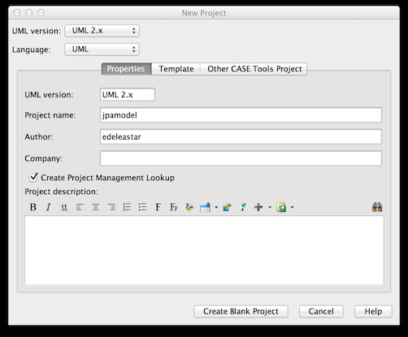
This should present a screen like this:
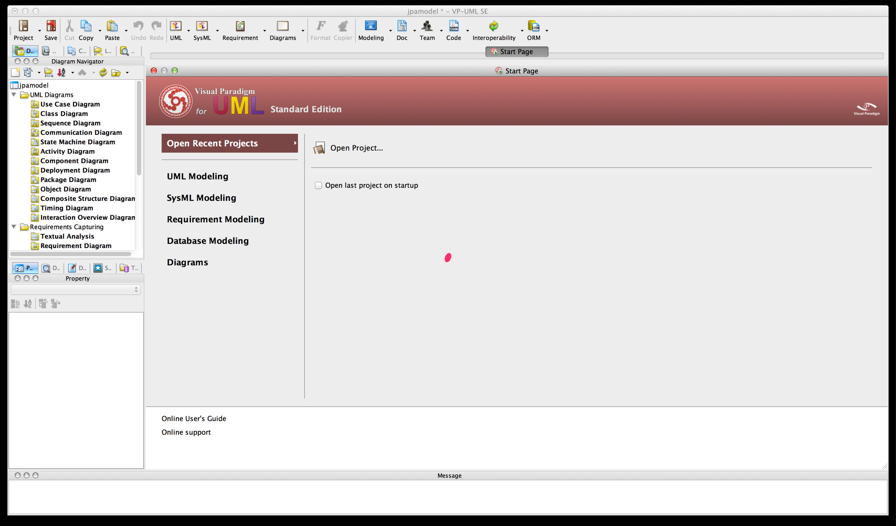
We start by creating a new "Class Diagram":

Press OK and the class diagram editor is displayed:
Before we create any classes, we are going to make some small adjustments to the default look and feel. Select 'Tools->Projects Options->Diagramming->Shape' and make the 'default shape fill format' white (instead of blue currently):

Then select 'Class->Presentation' and set 'show attribute option' and 'show operation option' to both be 'hide all'
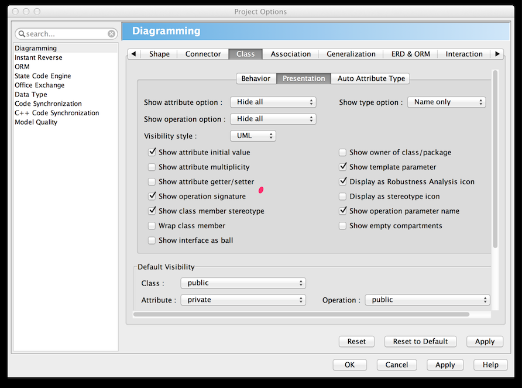
Drag the 'class' icon onto the canvas, call the class Club. Create another one and call it Player. Your canvas should look like this:
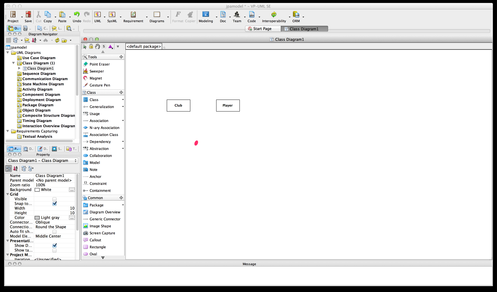
Save the project. Make sure you remember where you put it. A useful place is to put in inside the same folder as the play project
Initial Model for Player and Club
In your jpamodel eclipse project, create two new classes in the model package:
Club
package models;
import javax.persistence.Entity;
import play.db.jpa.Model;
@Entity
public class Club extends Model
{
public String name;
public Club(String name)
{
this.name = name;
}
}
Player
package models;
import javax.persistence.Entity;
import play.db.jpa.Model;
@Entity
public class Player extends Model
{
public String name;
public Player(String name)
{
this.name = name;
}
}
Now we create the unit test harnesses. In 'test/default package' create these two tests:
ClubTest
import org.junit.*;
import java.util.*;
import play.test.*;
import models.*;
public class ClubTest extends UnitTest
{
@Before
public void setup()
{
}
@After
public void teardown()
{
}
@Test
public void testCreate()
{
}
}
PlayerTest
import org.junit.*;
import java.util.*;
import play.test.*;
import models.*;
public class PlayerTest extends UnitTest
{
@Before
public void setup()
{
}
@After
public void teardown()
{
}
@Test
public void testCreate()
{
}
}
Run the app now in 'test' mode:
play test
...and navigate to the test runner page:
Select the Club and Player tests - and they should be green.
Also try the database interface:
Initial Tests for Player and Club
PlayerTest
In PlayerTest introduce a fixture and create some test objects:
public class PlayerTest extends UnitTest
{
private Player p1, p2, p3;
@Before
public void setup()
{
p1 = new Player("mike");
p2 = new Player("jim");
p3 = new Player("frank");
p1.save();
p2.save();
p3.save();
}
@After
public void teardown()
{
p1.delete();
p2.delete();
p3.delete();
}
@Test
public void testCreate()
{
}
}
Run the tests - and have a look at the admin interface. Can you see any player objects? No because teardown() is deleteing all of the objects. Comment out the @After annotation:
//@After
and run the tests again. This time - if you refresh the database page - you will see the three player objects. Being able to see them in the database interface can be particularly useful if you are introducing new relationships between objects.
Now we will bring in utility function into the Player class:
public static Player findByName(String name)
{
return find("name", name).first();
}
Note this method is 'static'.
Now we can actually implement a test.
@Test
public void testCreate()
{
Player a = Player.findByName("mike");
assertNotNull(a);
assertEquals("mike", a.name);
Player b = Player.findByName("jim");
assertNotNull(b);
assertEquals("jim", b.name);
Player c = Player.findByName("frank");
assertNotNull(c);
assertEquals("frank", c.name);
}
This test should pass. Change one of the stings to deliberately force an error just to be sure.
Do one more (negative) test to make sure that if we try to find an object that is not there, we get null:
@Test
public void testNotThere()
{
Player a = Player.findByName("george");
assertNull(a);
}
All tests should pass now.
ClubTest
Extend Club with the same utility methods as Player:
public String toString()
{
return name;
}
public static Club findByName(String name)
{
return find("name", name).first();
}
and now we can write a similar set of tests in PlayerTest:
import org.junit.*;
import java.util.*;
import play.test.*;
import models.*;
public class ClubTest extends UnitTest
{
private Club c1, c2, c3;
@Before
public void setup()
{
c1 = new Club("tramore");
c2 = new Club("dunmore");
c3 = new Club("fenor");
c1.save();
c2.save();
c3.save();
}
@After
public void teardown()
{
c1.delete();
c2.delete();
c3.delete();
}
@Test
public void testCreate()
{
Club a = Club.findByName("tramore");
assertNotNull(a);
assertEquals("tramore", a.name);
Club b = Club.findByName("dunmore");
assertNotNull(b);
assertEquals("dunmore", b.name);
Club c = Club.findByName("fenor");
assertNotNull(c);
assertEquals("fenor", c.name);
}
@Test
public void testNotThere()
{
Club a = Club.findByName("george");
assertNull(a);
}
}
These tests should run successfully. Experiment with commenting out the @After annotation and seeing the actual objects in the database.
Modeling a Player / Club Relationship
Returning to Visual Paradigm - you may notice a red line under each class. It says 'Very bad' if you click on it. Do so now, and in a subsequent dialog you will have an opportunity to disable this 'Quality Checker' completely We will not be using this feature.
On the palette on the left, select the 'association' element and use it to connect Club and Player. It should look like this:
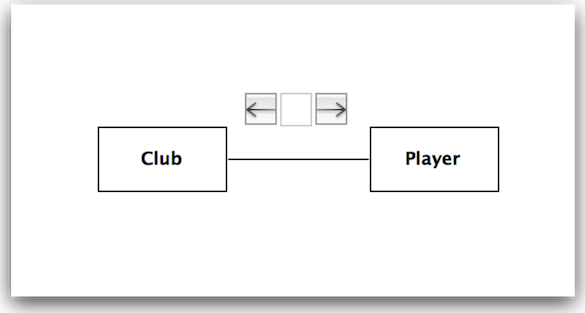
Select the association (the line), and locate the following panel (which should look like this:
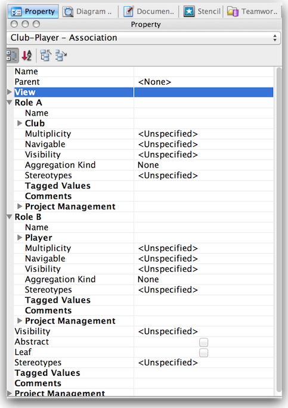
Now edit as follows:
For Role A:
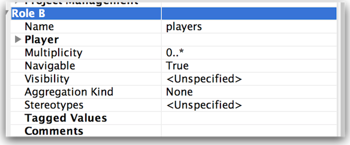
For Role B:
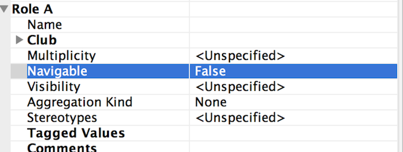
If this works, then the class diagram should look like this:

We can now implement this relationship. In Eclipse, modify Club as follows:
public class Club extends Model
{
//...
@OneToMany(cascade=CascadeType.ALL)
public List<Player> players;
public Club(String name)
{
this.name = name;
this.players = new ArrayList<Player>();
}
//...
public void addPlayer(Player player)
{
players.add(player);
}
//...
}
This establishes the relationship as modeled in UML.
Testing a Player / Club Relationship
We will focus these tests in the ClubTest class. Expand the fixture:
private Player p1, p2, p3;
and in the setup(), create some players and add some of them (not all) to the 'c1' club:
@Before
public void setup()
{
p1 = new Player("mike");
p2 = new Player("jim");
p3 = new Player("frank");
c1 = new Club("tramore");
c2 = new Club("dunmore");
c3 = new Club("fenor");
c1.addPlayer(p1);
c1.addPlayer(p2);
c1.save();
c2.save();
c3.save();
}
We can now write a new test to see if the 'tramore' has the players "mike" and "jim":
@Test
public void testPlayers()
{
Club tramore = Club.findByName("tramore");
assertEquals (2, tramore.players.size());
Player mike = Player.findByName("mike");
Player jim = Player.findByName("jim");
Player frank = Player.findByName("framk");
assertTrue (tramore.players.contains(mike));
assertTrue (tramore.players.contains(jim));
assertFalse (tramore.players.contains(frank));
}
This test should pass.
We might be interested in seeing how the database models the relationship. Comment out the @After annotation, and also all of the @Test annotations except one (the last one). Run the test, and then explore the Player objects in the database interface. See if you can make sense of them. You may wish to do this occasionally, but be sure to comment in all the annotations, and perhaps also restart the application as leaving these annotations out will cause serious anomalies in the database.
Now introduce the following test:
@Test
public void testRemovePlayer()
{
Club tramore = Club.findByName("tramore");
assertEquals(2, tramore.players.size());
Player mike = Player.findByName("mike");
assertTrue(tramore.players.contains(mike));
tramore.players.remove(mike);
tramore.save();
Club c = Club.findByName("tramore");
assertEquals(1, c.players.size());
mike.delete();
}
Read and absorb the logic of this test. As an experiment, comment out the final line (deleting mike). Then look to the database interface and note that mike is still in the database after the test have run.
Note also that if we leave the deletion of mike commented out, and re-run the tests - then other tests start to fail. The only cure now will be to restart the application.
Bidirectional Club / Player Relationship
We might like each player to also 'know' which club he/she belongs to. In fact his is probably a more natural relationship for these model elements.
In Visual Paradigm, select the association between Club and Player again, its properties may look like this:
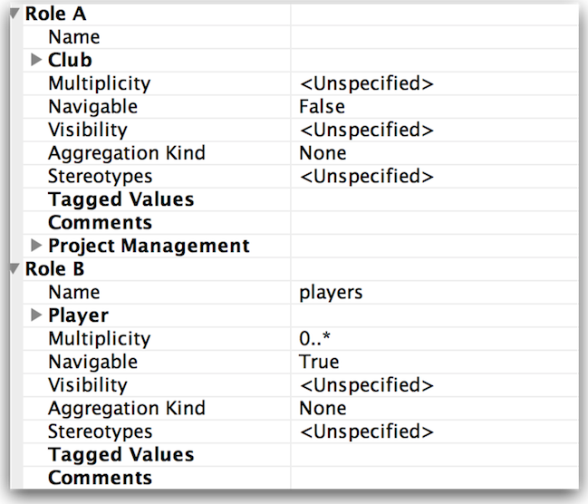
Adjust Role A (the role at the Club end) by giving it a name, changing its navigability and multiplicity parameters as shown here:

The class diagram will now look like this:
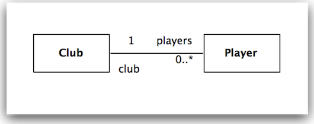
Contrast this with the earlier version:
Implementing this variant of the relationship requires additional attributes and annotations in both Player and Club.
Player:
@ManyToOne
public Club club;
Club
@OneToMany(mappedBy="club", cascade=CascadeType.ALL)
public List<Player> players;
The name 'club' must match in both the annotation and the attribute. We also need to make the following adjustment to the Club.addPlayer method:
public void addPlayer(Player player)
{
player.club = this;
players.add(player);
}
This method ensures that the relationship is correctly established.
No adjustment to the model can be considered complete without a unit test. Introduce the following test to ClubTest:
@Test
public void testPlayerClub()
{
Player mike = Player.findByName("mike");
assertNotNull (mike.club);
assertEquals ("tramore", mike.club.name);
}
Exercises
This is an extension of the model to include:
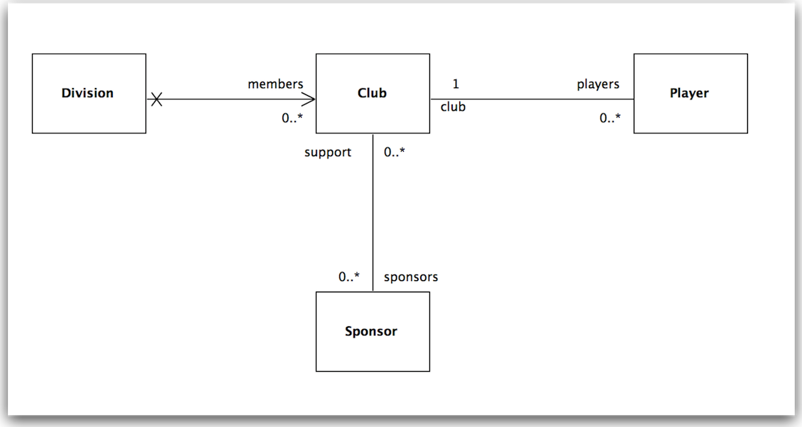
You should be able to:
- Replicate this model in Visual Paradigm.
- Incorporate the new classes into the jpamodel project
- Build some unit tests to exercises the model